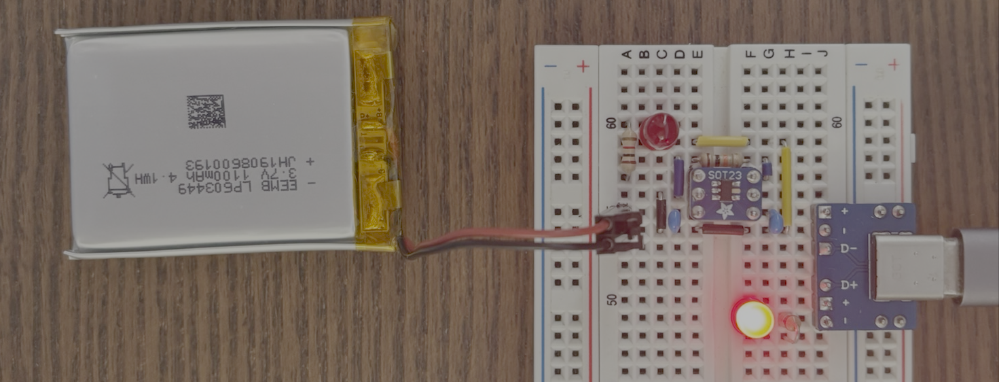
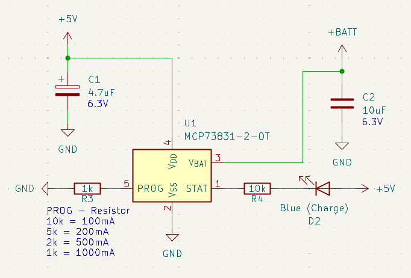
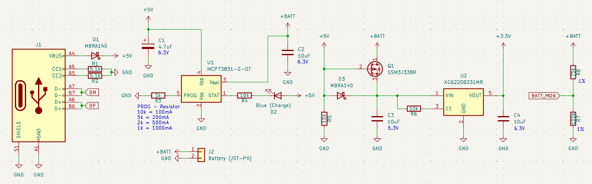

MCP73831
El MCP73831 es un cargador de baterias de los tipos Li-Ion & Li-Polymer de una sola celda, es muy simple de usar y muy popular. Permite diferentes configuraciónes por lo que te recomiendo que consultes el datasheet.

Existen productor comerciales muy populares con este CI, entre ellos tenemos él Adafruit Micro-Lipo Charger for LiPoly Batt with USB Type C Jack y en caso de interesar te dejo su diagrama esquemático.

Circuito principal
El proceso de carga consta de tres etapas: primero una carga de pre-acondicionamiento, luego una carga rápida de corriente constante y, finalmente, una carga de mantenimiento a voltaje constante para mantener la batería a plena carga. La corriente de carga predeterminada es de 100 mA (10k), por lo que funciona con baterías y puertos USB de cualquier tamaño. Una vez cargado se apaga el LED.

Warning
Si conectas la batería al revés, verás chispas y humo. El daño en el CI es permanente.
Tiempo de carga
Sí pones una resistencia de 10 kΩ en el ping de PROG en el MCP73831 para cargar una batería de 1100 mAh a solo ~100 mA, tardará un tiempo aproximado de 11h.
Esto es en una situación ideal, si la batería está muy descargada se puede tardar entre 12 y 14 horas.
| RPROG | Corriente | Tiempo |
|---|---|---|
| 10 kΩ | 100 mA | 12–14 h |
| 5 kΩ | 200 mA | 6–7 h |
| 3.3 kΩ | 300 mA | 4–5 h |
| 2.2 kΩ | 450 mA | ~3 h |
| 2 kΩ | 500 mA | ~2.5–3 h |
La corriente y el tiempo es orientativo.
Si el circuito integrado llega a 150°C se suspende automaticamente la carga hasta enfriarse unos 10°C. (Sección 4.10 en el datasheet)
Circuito completo
En la práctica necesitamos un circuito mucho más complejo que el anterior, necesitas un conector USB que se puede usar como alimentación de 5V, el circuito anterior que hace de cargador, un regulador de voltaje para tener 3.3v, un switch que conmuta entre el VCC del USB o el de la batería, y por último un circuito que permite medir el voltaje con un MCU. Todo junto es lo que se espera tener en un proyecto que use baterias de este tipo.
Esta idea la obtuve de @cybercitycircuits que hizo un video corto explicando USB-C and LiPo Battery Charging Design.

Estado de la carga
La comprobación más sencilla es medir la batería con un multímetro sin el cargador conectado:
- ~4,20 V → prácticamente cargada al 100%.
- 4,10–4,20 V → muy cargada.
- ~3,9–4,0 V → carga parcial.
- ~3,7–3,8 V → carga media/baja (muy aproximadamente).
- <3,5 V → bastante descargada.
Descarga
Para simular una descarga de la batería use una carga fantasma/dummy load de 8Ω 1% 150W